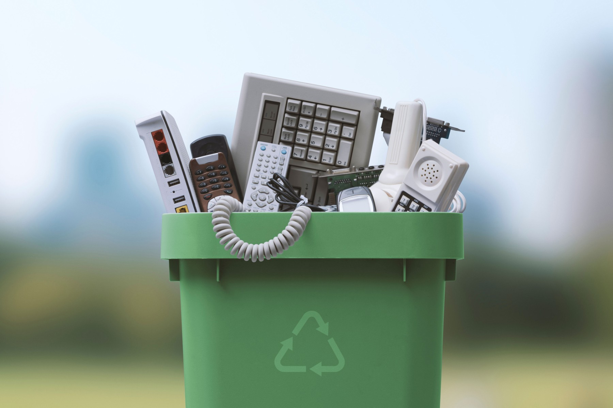
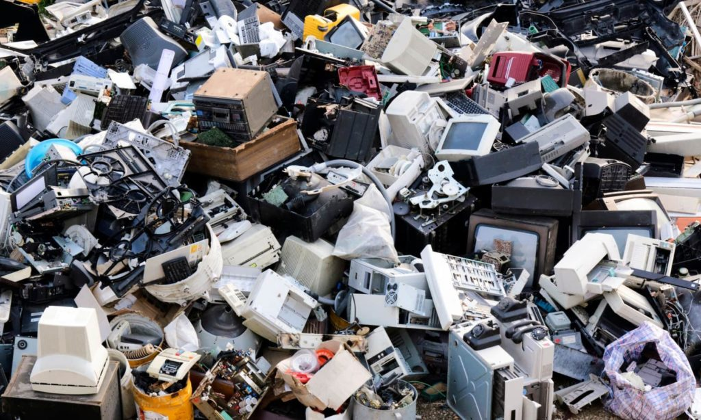
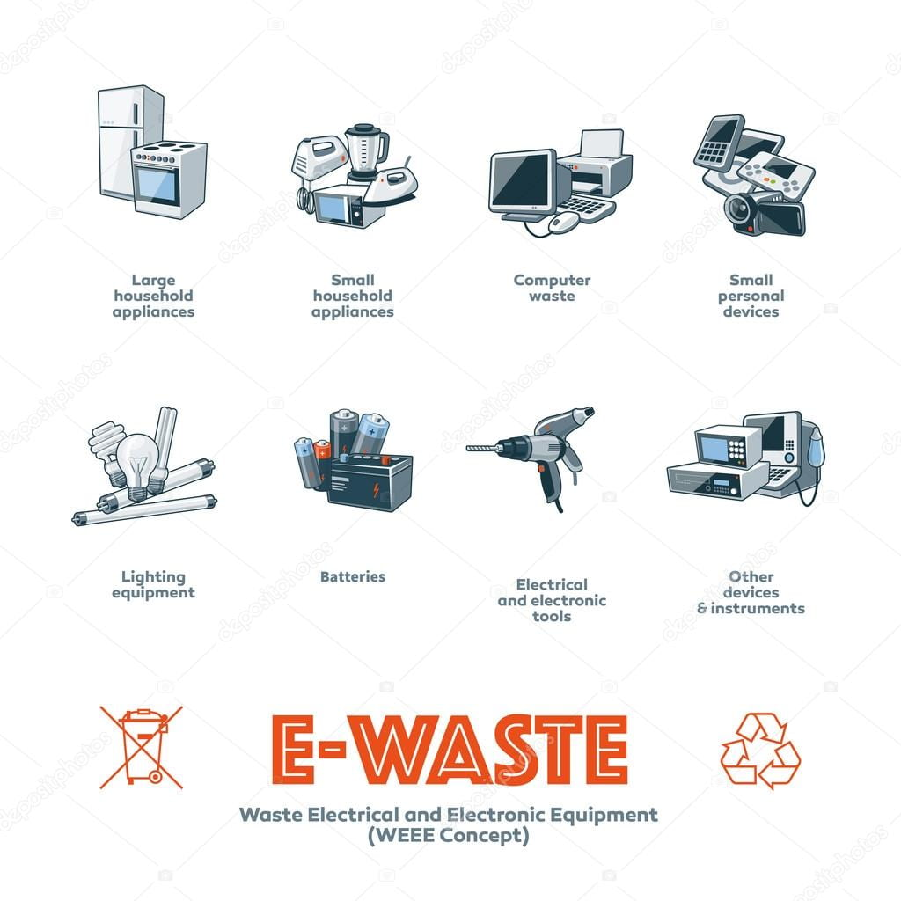

E-waste is short for electronic waste. It includes electronic devices that are old, broken, damaged or no longer wanted. When we stop using these devices, they become e-waste. Instead of throwing them into normal dustbins, we should try to reuse, repair or recycle them.


E-waste can cause serious problems when it is not disposed of properly. Some electronic devices contain harmful substances such as lead and mercury. If they are dumped in landfills or burned, these substances can pollute the soil, water and air.
This pollution can harm plants, animals and humans. People who breathe in harmful fumes or come into contact with dangerous chemicals may develop health problems. Children are especially vulnerable because their bodies are still growing.
E-waste can also waste valuable materials that could have been recovered and used again.
Recycling e-waste is important because it helps protect our planet and saves useful resources. Many electronic devices contain materials such as gold, silver, copper and aluminium. Instead of digging more materials out of the Earth, recycling allows us to recover and use some of them again.
Proper recycling also includes:
You don't need to be a scientist to help reduce e-waste! Small actions can make a big difference.
Reduce: Think before buying a new gadget. Do you really need it? Try to use your current devices for longer.
Reuse: If your device still works, donate it or pass it on to someone who needs it.
Repair: If something breaks, see if it can be fixed instead of immediately buying a replacement.
Recycle: Take unwanted electronics to an authorised e-waste collection or recycling centre.
The world produced around 62 million tonnes of e-waste in 2022.
Only 22.3% of this e-waste was officially collected and recycled.
The amount of e-waste could reach 82 million tonnes by 2030.
Electronic devices contain valuable materials that can be recovered and used again
1. Is e-waste dangerous?
It can be dangerous if it is not handled properly. Some electronics contain harmful substances that can pollute the environment and affect human health.
2. Can old mobile phones be recycled?
Yes! Old phones contain useful materials such as copper, gold and other metals that can be recovered through recycling.
3. Should I throw batteries into a normal dustbin?
No. Batteries should be taken to a proper battery collection or recycling point because they can contain harmful chemicals and may cause fires if damaged.
4. What happens to e-waste at a recycling centre?
The devices are collected, sorted and carefully taken apart. Useful materials are separated and recovered so they can be used to make new products.
5. What should I do with electronics that still work?
You can continue using them, donate them or pass them on to someone else instead of throwing them away.
6. How can students help reduce e-waste?
Students can take care of their gadgets, avoid unnecessary upgrades, repair damaged devices and encourage their families to recycle electronics properly.